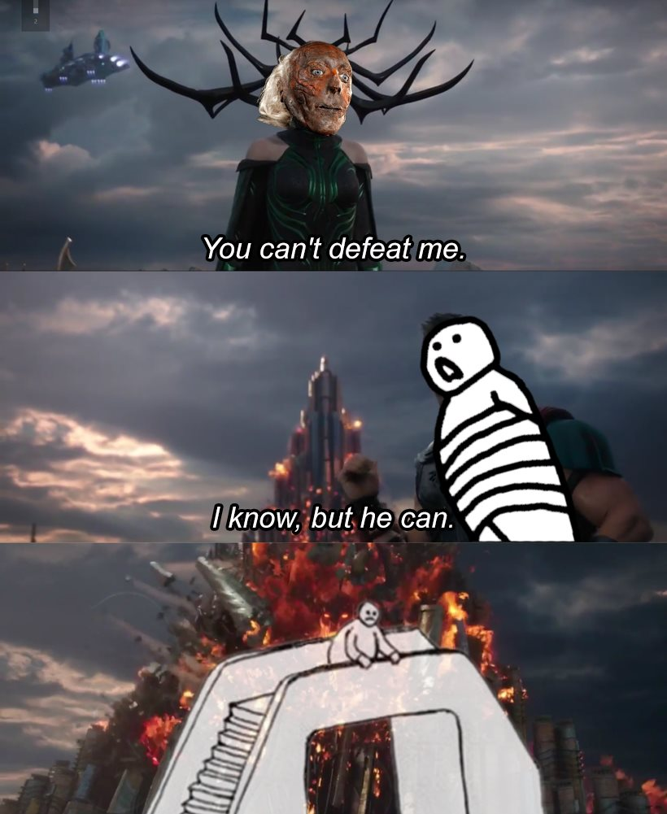
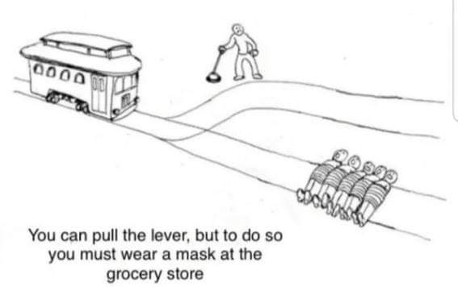
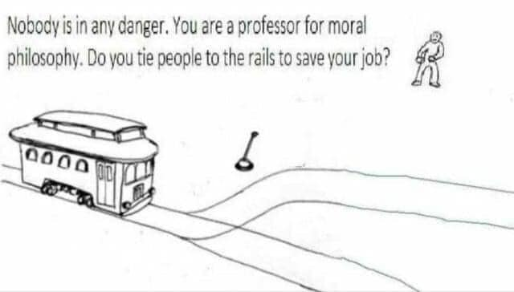

Trolley problem
Pull the lever
The classic trolley problem: A trolley is barreling down the tracks toward a group of five people. Do you pull the lever to divert it to a track with one person?
The answer has implications for the value of a human life. Mostly, this comes up in discussions with HCEA about what it means to contribute to society and how a life lived with purpose should be framed.
Philosophy is heavy stuff, so of course people meme it. That last one is pretty deep in the trolley problem meta. A hidden advantage to the GENED Evolving Morality is being more in0tune with trolley problem in-jokes. It's also one of my favorite classes I've taken so far. Professor Joshua Greene is a great lecturer.
The trolley problem can start conversations, but thought experiments like it tend to be oversimplifications. It could be useful, or we could be spinning our wheels and not making meaningful change.
